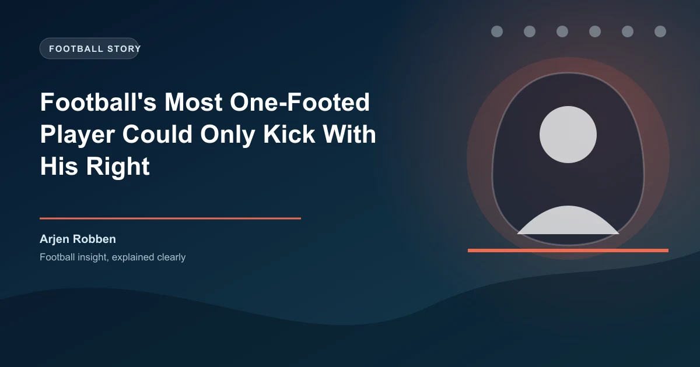

Every elite footballer who reaches the top of the sport is a two-footed phenom. At least, that is what the conventional wisdom says. The modern game demands ambidexterity: the ability to pass under pressure with either foot, to shoot from any angle, to shift the ball to your weaker side and still deliver. Scouts obsess over a young player's weak foot. Coaches drill it in training from the age of eight. And yet, standing in defiance of all that logic, is Arjen Robben — a man who built one of the greatest careers in football history using essentially one foot. His left foot. His right foot was, for all practical purposes, a balancing appendage.
Robben's career is the ultimate rebuttal to the idea that footballers must be complete. He scored 134 goals with his left foot across his spells at PSV, Chelsea, Real Madrid, Bayern Munich, and the Netherlands national team. He scored 10 goals with his right foot. Eight with his head. Two with "other" parts of his body, according to Opta data compiled across the UEFA Champions League, Premier League, La Liga, and Bundesliga. That is a ratio of more than 13 to 1. Among elite attacking players in the modern era, no one comes close to that level of one-footed dependence.
The most fascinating aspect of Robben's one-footedness is that it produced the most predictable move in modern football — and it worked anyway. Posted on the right wing, Robben would receive the ball, feint as if to go down the line, then cut inside onto his left foot. Every defender in the world knew it was coming. They had watched the tape. They had studied the angles. They had been briefed by their coaches to show him the outside, to force him onto his right foot, to never let him cut inside. And still, game after game, season after season, Robben cut inside and scored.
The 2013 UEFA Champions League final is the defining example. Bayern Munich faced Borussia Dortmund at Wembley. The score was 1-1. In the 89th minute, Robben received the ball on the right side of the box, did exactly what everyone expected him to do — cut inside onto his left foot — and slid the ball past Roman Weidenfeller to win the European Cup for Bayern. It was the most predictable goal in the history of the sport. And it was unstoppable.
Robben's signature move worked because his left foot was not just good — it was extraordinary. The curl, the precision, the speed of release: his left foot was a weapon that transcended tactical analysis. Knowing what he was going to do and stopping him were two entirely different problems.
| Body Part | Goals | Percentage |
|---|---|---|
| Left Foot | 134 | 87.0% |
| Right Foot | 10 | 6.5% |
| Head | 8 | 5.2% |
| Other | 2 | 1.3% |
| Total | 154 | 100% |
The data spans Robben's entire senior career across the Eredivisie (PSV), Premier League (Chelsea), La Liga (Real Madrid), Bundesliga (Bayern Munich), and the UEFA Champions League. It does not include his international goals for the Netherlands (37 goals in 96 caps), which follow a similar pattern — the vast majority scored with his left foot, including the famous volley against Spain in the 2014 World Cup group stage that avenged the 2010 final defeat.
To put the 13:1 ratio in perspective: most elite wingers operate at roughly a 3:1 or 4:1 ratio between their dominant and weaker foot. Lionel Messi, who is famously left-footed, scores roughly 80% with his left — but his right-foot and headed goals still number in the dozens. Robben's reliance on his left foot is statistically anomalous at the highest level of the sport.
Robben is the extreme, but he is not alone. Football history is full of legends who relied heavily on one foot — and used that reliance to build unstoppable patterns of play.
Diego Maradona (left foot). The Argentine genius was almost exclusively left-footed. His right foot was used primarily for balance and standing. In the 1986 World Cup quarter-final against England — where he scored both the "Hand of God" and the "Goal of the Century" — every touch of the ball in the second goal came off his left foot. His right foot never made contact with the ball during that entire run.
Lionel Messi (left foot). Like Maradona, Messi's default is his left. While he has scored some important goals with his right (including a hat-trick goal against Real Madrid in 2014 and a Champions League semi-final goal against Bayern in 2015), his reliance on his left foot is extreme. In his record-breaking 2012 calendar year (91 goals), the vast majority were scored with his left. His dribbling, his finishing, his passing — all flow through his left foot.
David Beckham (right foot). Beckham's right foot was generational. His crossing, his free kicks, his long-range passing — all were executed with a technical purity that bordered on art. But his left foot was, by his own admission, almost unusable in match conditions. He trained it, certainly. But in a game, Beckham would contort his body into impossible shapes to avoid using his left foot. It did not matter. His right foot was so exceptional that it alone defined his role at Manchester United, Real Madrid, England, LA Galaxy, PSG, and AC Milan.
Antonio Valencia (right foot, 98%). The Ecuadorian winger, who played for Manchester United and Wigan Athletic, holds the unofficial record for the most lopsided foot preference in Premier League history. Analysis of his goal-scoring suggests that approximately 98% of his goals were scored with his right foot. Valencia, like Robben, played predominantly on the right wing. Unlike Robben, his move was to go on the outside and cross with his right foot — but the same principle applied: everyone knew what he would do, and it still produced results.
The success of extreme one-footed players challenges a fundamental assumption in football development. Coaches at academy level obsess over weak-foot training. Players are told from a young age that they must be equally proficient with both feet to reach the top. And yet, Robben, Beckham, Maradona, and Valencia all reached the absolute pinnacle of the sport with a glaring technical imbalance.
The answer lies in specialisation. A player who is exceptional with one foot can develop patterns of play that are so refined, so practised, that the predictability becomes irrelevant. Robben's cut-inside move was not a weakness despite being predictable — it was a strength because he had executed it tens of thousands of times in training. The repetition created a level of technical execution that no amount of tactical preparation could neutralise.
There is also a strategic advantage to extreme footedness. Because the defender knows what is coming, they overcommit to blocking that option. This creates space for the attacker to exploit in other ways — drawing fouls, creating space for teammates, and forcing the defence to shift its shape in predictable ways. Robben was not just scoring goals; he was warping defensive structures simply by existing on the pitch.
Extreme one-footed players create unique betting opportunities, particularly in player prop markets. When a heavily one-footed winger is playing against a full-back who struggles to show them onto their weak side, the probability of that player having multiple shots or scoring increases significantly. Look for Robben-type players facing full-backs with poor defensive positioning on their inside shoulder.
Understanding a player's foot preference is a legitimate edge in football betting, particularly in the following markets:
Shots on target. Heavily one-footed players tend to shoot more often when they can get the ball onto their preferred foot. If a left-footed winger is playing on the right side (cutting inside), their shots-on-target numbers increase significantly. Betting overs on their individual shot totals in favourable matchups is a strategy backed by statistical analysis.
Anytime goalscorer. One-footed players who play in positions that allow them to access their preferred foot frequently are more predictable goal-scoring bets. Robben's anytime goalscorer odds were consistently underpriced by bookmakers during his peak at Bayern, precisely because his goal-scoring pattern was so reliable: cut inside, shoot, score.
Assists from specific areas. One-footed wingers tend to assist from predictable zones. A right-footed winger playing on the right will typically pull back crosses from the byline. A left-footed winger on the right (like Robben) will look to play through balls or cut-back passes after cutting inside. Understanding these patterns can help in betting on assist types or specific player combinations.
The "predictable but unstoppable" factor. There is a behavioural economics angle here. Bookmakers set odds based on aggregate data, but they often underestimate players who are statistically anomalous. Robben's goal-scoring output was remarkably consistent across seasons, yet his odds fluctuated based on recent form rather than the underlying reliability of his one move. Bettors who recognised this consistency could find value in backing him even during perceived "slumps."
Before betting on a one-footed winger's shots or goals, check the positioning of the opposition's full-back. If the full-back is aggressive and steps onto the winger early, the winger will have more opportunities to cut inside. If the full-back sits deep and shows the winger the outside, the winger's effectiveness drops significantly. This tactical detail is often missed by bookmakers' algorithmic models.
Robben's career is a reminder that football is not a game of perfect balance. It is a game of exceptional execution. A player who can do one thing at the highest possible level will often be more dangerous than a player who can do ten things at a merely good level. The one-footed stars of the sport — Robben, Messi, Maradona, Beckham, Valencia — did not succeed despite their limitation. They succeeded because their limitation forced them to become extraordinary at what they could do.
The next time you watch a one-footed winger cut inside and score, do not roll your eyes at the predictability. Appreciate the mastery. They did it again because they can always do it again.
Use player tendency analysis like this to find value in the markets. Get free daily predictions from the WinFulltime team.
Generate optimized accumulator combinations from today's AI-powered predictions. Set your target odds and get instant ticket suggestions.
Free Ticket Builder →